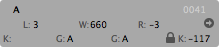

Metrics and Kerning can be changed with the keyboard or by typing in the value.
In Edit View select the Text Tool.
Adjusting the spacing of the selected glyph:
With this ⌘+← / ⌘+→ you change the right sidebearing and with ⌃+← / ⌃+→ the left sidebearing use ⇧ (shift) to move 10 units
Adjusting the kerning of the selected glyph:
⌘+⌥+← / ⌘+⌥+→ for the kerning with the letter to the right⌃+⌥+← / ⌃+⌥+→ for the kerning with the letter to the left use ⇧ (shift) to move 10 units
The Glyph inspector pane shows all necessary values.
"L:" the left sidebearing
"W:" the width
"R:" the right sidebearing
(left) "K:" the kerning value for the glyph at the left
(left) "G:" the kerning class name for the kerning to the left side
(right) "G:" the kerning class name for the kerning to the right side
the lock: indicates if the kerning is an exception or not. Click on it to change the exception or not.
(right) "K:" the kerning value for the glyph at the right